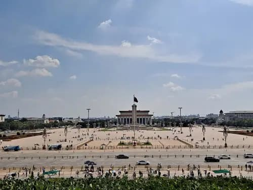

1️⃣
抢票前，先做这 5 件事
不管抢哪个景点，先把这几步搞定，成功率直接翻倍
1
提前录好身份信息在官方小程序/公众号「常用联系人」里提前填好姓名+身份证，抢票直接勾选，能省 10 秒以上。故宫、国博、军博、毛纪、城楼全靠这一步抢时间。
2
网络选 5G 或稳定 WiFi，有条件双设备手机+电脑双开；天安门广场这类还可以小程序和「京通」互切着看余票。
3
姓名、身份证号提前复制到剪贴板有些平台不让预填联系人，直接粘贴比手输快。
4
提前到小程序「通知设置」打开通知提醒要发出来，得先把通知权限打开（我的 → 通知设置，重要！强烈建议打开）。
5
定闹钟，然后把提醒交给小程序20:00、17:00、11:00 靠自己记太容易漏。把想去的景点加进行程，小程序到点提醒你。
🧩 本小程序怎么帮你以上「提醒」相关设置都在「我的 → 通知设置」里完成，先打开通知，后面的抢票提醒才收得到。
✦
2️⃣
必抢的 6 个，先安排
标「极难约」的不用慌：卡对时间点，人人都有机会
故宫博物院极难约
提前 7 天 · 20:00 放票 · 周一闭馆
没抢到别放弃，20:00-20:50 反复刷，整点前后回流最多
加入提醒
中国国家博物馆极难约
提前 7 天 · 17:00 放票 · 周一闭馆
17:00 前 3 分钟进页面；放票后 11 秒内提交成功率最高
加入提醒
天安门城楼极难约
提前 7 天 · 17:00 放票 · 周一闭馆
只放第 7 天一天的量；16:55 开始刷，没抢到等 18/19 点回流
加入提醒

天安门广场·升旗极难约
提前 1-7 天 · 12:00 更新
升旗最难；晚上 22 点后、凌晨 0 点后容易捡到第二天退票
加入提醒
毛主席纪念堂极难约
提前 1-6 天 · 12:30 放票 · 周一闭馆
凌晨 0-1 点系统更新是捡漏黄金期；必须本人证件，不能带包
加入提醒
国家自然博物馆极难约
提前 3 天 · 11:00 放票 · 周一闭馆
周末/节假日几分钟约满；提前挂好常用联系人，到点直接提交
加入提醒
🧩 本小程序怎么帮你首页选好日期和景点 → 生成预约时间线 → 把要抢的加入提醒，几点放票一目了然，到点提醒你。
✦
3️⃣
规则特殊，别用错招
军事博物馆极难约
提前 8 天 · 每日 9:00 / 17:00 两时段
卡点进，约不上别退出持续刷新；人多可分时段分批约
加入提醒
清华大学 / 北京大学极难约
双轨制 · 8:00-17:00 即时约 + 17:00-21:45 抽签
抽签 22:00 公布；每人每 180 天仅可成功预约 1 次，别轻易取消
加入提醒
人民大会堂较难约
提前 1-3 天 · 17:00 放第 3 天票
相对好约，卡点即可
加入提醒
中国考古博物馆极难约
提前 3 天 · 工作日好约
周末节假日秒空，建议约工作日
加入提醒
🧩 本小程序怎么帮你军博两个时段、清华北大的抽签时间，都会标在「放票时间」标签和时间线上，不用自己记两套。
✦
4️⃣
不用抢的，别浪费精力
✓
免预约，直接进（6 个）颐和园、天坛、圆明园、北海、北京动物园、首都博物馆（首博带身份证登记入馆，周二闭馆，开到 20:00）。
✓
需预约但票源充足（1 个）恭王府——官方公众号预约，基本每天都能约到，不用蹲点。
✓
要提前买票，但不是「抢」（2 个）八达岭、慕田峪——「长城内外」小程序/官网实名预约购票（慕田峪可提前 30 天），旺季提前几天买好即可。
!
小提醒颐和园、天坛虽免预约，但旺季联票（含园中园）可能卖完，建议提前线上购票。
🧩 本小程序怎么帮你卡片上直接标「无需预约」，选景点时一眼分清哪些要抢、哪些随到随买。
✦
5️⃣
捡漏时间表 + 避坑清单
没抢到 ≠ 没机会，回流票是真实存在的，按表蹲
⏰
故宫 20:00-20:50、21:00、21:30、22:00退票 + 超时未支付订单回流
⏰
国博 17:00 后 10 分钟内首轮没锁住的票回流最多
⏰
城楼 18:00、19:0017 点没抢到，这两波回流最多
⏰
毛纪 0:00-1:00系统更新冷门期，成功率最高
⏰
升旗 22:00 后、0:00 后第二天退票回流
⏰
出行前 1-2 天 20:00-22:00所有热门景点退票高峰
1
周一闭馆是最大的坑故宫、国博、城楼、军博、自然馆、毛纪、科技馆、美术馆、工艺美术馆、孔庙、恭王府周一闭馆；首博、天文馆是周二闭馆。
2
证件要带原件多数景点刷身份证原件入园；儿童免费也要预约，无身份证儿童带户口本。
3
上午/下午票别搞错故宫上午票 12:00 前入场、下午票 12:00 后入场，进错时段进不去。
4
别买黄牛 / 代抢官方免费或官方渠道唯一，第三方都是坑。
🧩 本小程序怎么帮你每个景点的闭馆日都标在卡片上，生成时间线时自动跳过闭馆日，不会让你白跑。